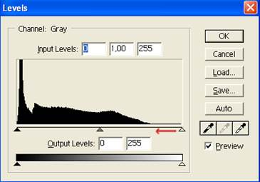
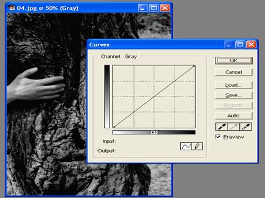
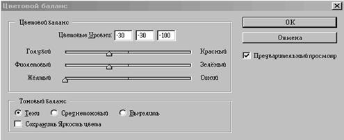

1. Тондық диапозонды келтіру
2. Тондық коррекция
3. Динамикалық диапозон
4. Гамма-коррекция
Adobe Photoshop программасы фотобейнелердің сапасын жақсарту және олардың кемшіліктерін жою үшін арналған әртүрлі мүмкіндіктерге ие. Осының көмегімен бейнені ақшылдатуға, қаралатуға, қанықтығын арттыруға, түстер коррекциясын келтіруге, көлеңкелерді жұмсартуға, беттегі әжімдерді жазуға, «қызыл көз» эффектісін болдырмауға, жаралар мен басқа да бүлінген аймақтарды жасыруға және басқа көптеген коррекциялау операциялары мен фотосуреттерді өңдеуге болады.
Тондық диапазонды келтіру. Суреттер мен түсті иллюстрацияларды сканер арқылы енгізген кезде бейнелер әрқашанда сапалы болып шыға бермейді. Сандық фотокамералар арқылы алынған суреттерде де әр түрлі дефектілер болады, бұлар түстік және тонды баланстардың бұзылуының нәтижесі. Мұндай жағдайларда ең бірінші кезекте бейненің тонды диапазонын коррекциялау қажет. Бұнда түс берілуі де автоматты түрде жөнделеді.
Гистограммадағы қара және ақ түсті нүктелерді анықтау арқылы тондық диапазонды коррекциялау. Кез-келген бейненің тонды балансынаң объективті сипаттамасы болып гистограмма табылады.
Осы палитраны Navigator /Info/ Histogram (Навигатор/ Информация/ Гистограмма) терезесінде көрсету үшін тышқанды Histogram (Гистограмма) жарлығында шерту керек. Егер көрсетілген терезе экранда болмаса, меню қатарынан Window → Histogram (Терезе →Гистограмма) командасын таңдау қажет.
Гистограмма – бұл бейнедегі пиксельдердің жарықтылық деңгейін орналастыру графигі. Гистограмманың горизонталь осі бойынша ашықтылық көрсеткіші 0 (нөлден) 255-ке дейін қойылған. Ең қара түстер оң жаққа, ал ең жарық түстер оң жаққа орналастырылған.
Гистограмманың көмегімен бейненің тонды балансын объективті бағалап, қажетті коррекцияны көрсетуге болады. Егер де гистограммадағы пиксельдер бүкіл тондық диапазонда графиктің сол жағынан оң жағына дейін бірдей, тең болып орналасса, онда мұндай бейненің сапасы жақсы және ондағы қара, жарық және орташа тондар өңделіп, біркелкі жайғастырылған.
Егер негізгі пиксель массасы гистограмманың сол жағына қарай жақын орналасса, ал оң жағында пиксель болмаса, онда бейне шамадан тыс қара түсті болады. Ал егер пиксельдер графиктің оң жағына шоғырланса, сол жақта пиксель мүлдем болмаса, бейне өте ашық түсті болады.
Осы жағдайларда, яғни тондық баланс бұзылғанда тондық диапазонның коррекциясы өте қажет болады, ол Levels (Деңгейлер) сұхбат терезесінде орындалады.
Меню қатарынан Image → Adjustments → Levels (Бейне→Коррекция→Деңгейлер) командасын таңдап немесе Ctrl+ L пернелік комбинациясын теру керек. Экранда Levels (Деңгейлер) сұхбат терезесі пайда болады (3-сурет).

3-сурет. Levels (Деңгейлер) сұхбат терезесі
Бұл терезеде де пиксельдердің ашықтылық деңгейінің графигі бар. Бірақ мұнда графикте 3 үшбұрыш бар : қара – сол жақта, күлгін – ортасында, ақ – оң жақта. Қара үшбұрыштың гистограмманың сол жағында орналасуы ашықтылықтың сандық мәнін анықтайды. Үнсіз келісім бойынша бұл мән 0 (нөлге) тең. Ақ түсті үшбұрыштың оң жақта орналасуы оң жақ енгізу өрісі Input Levels (Енгізу деңгейі) мәніне сеәкес -255. күлгін үшбұрыштың орналасуы 1- ге тең. Осы үшбұрыштар түстердің сәйкестену коэффициенті мен бейненің гаммасын реттейді.
Гистограмманың жиегіндегі қара және ақ үшбұрыштар сәйкесінше қара және ақ нүктелерді белгілейді. Яғни бейненің ең қара және ең ашық бөліктерін тонды коррекцияның ең бірінші қадамы жаңадан ақ және қара нүктелерге орнату болып табылады.
Ақ және қара түсті нүктелерді орнату әр түрлі әдістермен орындалуы мүмкін. Солардың біреуі – гистограмманың көмегімен орындалады және тондық диапазонның шектері болып табылатын ақ және қара үшбұрыштарды ауыстыру. Орын ауыстырғаннан кейін үшбұрыштар қандай пиксельдерді көрсетсе, сәйкесінше сол пиксельдер қара және ақ түске боялады. Басқа пиксельдердің ашықтылығы пропорционал өзгертіліп, бұл жалпы түстік баланстың сақталуына көмек береді.
Үнсіз келісім бойынша орнатылған Preview (Алдын-ала көру) жалаушасында сұхбат терезесінде орындалған коррекцияның барлық нәтижелері бірден құжат терезесінде көрінетін болады.
Levels (Деңгейлер) сұхбат терезесінде тондық диапазонды дайындауда үнсіз келісім бойынша RGB каналдары да коррекцияланады. Ашылатын тізім Channel (Канал) көмегімен коррекция үшін кез-келген каналдардың біреуін –Red (қызыл), Green (жасыл), Blue (көк) таңдап алуға болады.
Levels (Деңгейлер) сұхбат терезесі ок кнопкасын басу арқылы жабылады.
Тондық коррекция. Өзімізге белгілі жартылай тонды бейнеде пиксельдер бір ғана сипаттамасымен – ашықтылығымен (яркостью) ерекшеленеді. Жартылайтонды бейненің сапасын ашықтылық гистограммасы (2-сурет) арқылы бағалауға болады, оны шақыру үшін Image → Adjust → Levels (Бейне →Коррекция →Деңгейлер ) командасы орындалады.
4–сурет
4-суретте горизонталь ось бойынша 0… –255 аралығындағы ашықтылық деңгейі диапазонда орналастырылған, ал вертикаль ось бойынша берілген ашықтылыққа ие пиксельдер саны берілген. Ақ-қара бейнеде пиксельдердің тек екі тегі бар екені анық – қара және ақ. Жартылайтонды бейнеде жартылайтондардың саны тонды диапазонмен сипатталады. Идеал түрде бейнеде жартылайтонның барлық пиксельдері қатысуы керек, яғни жартылайтонда диапазон барынша кең болуы қажет. Суретте сол жақтағы шеткі нүкте ашықтылығы нөлге тең пиксельдердің санын, ал оң жақтағы шеткісі кейбір максимал ашықтылықтағы пиксельдер санын көрсетеді. Гистограмманың оң жақ бөлігінде бос диапазон бар екендігі суреттен көрініп тұр. Бұл берілген ашықтылық көрсеткіштерінің қаралып жатқан бейнеде қатыспайтындығын көрсетеді. Оларды қайтару үшін тонды диапазонды созып, суретте көрсетілген оң жақтағы үшбұрышты қызыл бағдаршаға ораналастыру керек. Нәтижесінде ең ашық тонның (ол ақ нүкте деп аталады) ашықтылық мәні 255-ке ауысады. Құжат терезесі меню командасы File → Close (Файл → Жабу) таңдау арқылы жабылады.
Динамикалық диапазон. Әдетте бейнені қолданбас бұрын оны алдын-ала өңдеу қажет. Ең бірінші бейненің динамикалық дапазонын бағалау, яғни бейненің ең кіші және ең үлкен ашықтылығының арасын табу керек. Мұны Бейне → Гистограмма командасы арқылы орындауға болады. Деңгейлер сұхбат терезесіндегі Авто кнопкасы ерекше назар аудартады. Оны шерту бүкіл ашықтылық диапазоны алынатындай гистограмманың созылуына әкеліп соғады.
Алынған бейненің ең үлкен динамикалық диапазонға ие болғанын Гистограмманы немесе Деңгейлер сұхбат терезесін қайта шақыру арқылы білуге болады.
Гамма –коррекция. Сонымен гистограмма максимал динамикалық диапазонның қамтамасыз етілгенін көрсетеді. Бейнедегі қара тондардың ашық тондарға қарағанда артығырақ болуы немесе керісінше жағдайды түзету үшін гамма-коррекцияны қолданады. Оны Бейне → Коррекция →Қисықтар командасы арқылы шақырылатын Қисықтар (Кривые) сұхбат терезесінде (3-сурет) орындайды. Тышқанның көмегімен тасымалдау арқылы қисықтың ашықтылығын өзгертеді, яғни қаралау тондарды ашықталдау тондарға қарай тартады. Мұнда қисықтың басы мен соңы өзгеріссіз қалады, яғни бейненің динамикалық диапазоны өзгермейді.
Гамма –коррекцияны Деңгейлер (Уровни) сұхбат терезінде де Енгізу мәндері (Входные значения) өрісінде гамма-коэффициентті көрсетіп орындауға болады.
Түрлі –түсті фотосуреттер үшін түстік баланстың коррекциясы қажет болуы мүмкін. Оны Бейне → Коррекция → Түстік баланс командасымен шақырылатын сұхбат терезесінде орындайды. Түстік баланс коррекциясын қара, орташа және ашық тондар үшін бөлек-бөлек орындауға да болады.

5-сурет. Қисықтар (Кривые) сұхбат терезесі.

6-сурет. Түстік баланс (Цветовой баланс) сұхбат терезесі.
Бақылау сұрақтыры:
1. Тондық диапозонды келтіру дегеніміз не?
2. Тондық коррекция дегеніміз не?
3. Динамикалық диапозон дегеніміз не?
4. Гамма-коррекция дегеніміз не?